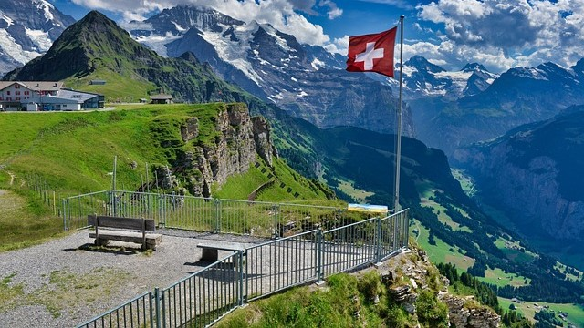

Swiss Splendor: Discovering the Magnificent Countrysides and Iconic Attractions of Switzerland
Grindelwald

Natural Enchantments
Eiger Glacier: Bask in the breathtaking splendor of this vast expanse of ice that extends from the summits of the Eiger, Mönch, and Jungfrau mountains. A breathtaking cable car trip will take you to the glacier's viewing platform, where you can enjoy expansive views of the surrounding alpine scenery.
First Cliff Walk: At the breathtaking suspension bridge that looms over the chasm below, First Cliff Walk offers visitors the exhilaration of walking on air. Walk along the 45-meter-high narrow boardwalk and take in the breath-taking vistas of the Wetterhorn and Eiger mountains.
Grindelwald Valley: Discover the enchanting Grindelwald Valley, which is home to quaint chalets, verdant forests, and glistening mountain streams. Hike beautiful paths with well-marked routes and discover secret waterfalls, sweeping vistas, and wildflower-filled alpine meadows.
Cultural Experiences
Grindelwald Museum: Visit the nearby museum to fully immerse yourself in Grindelwald's rich legacy and history. Explore fascinating exhibitions that offer insights into the cultural legacy of this little mountain community, including historical mountaineering, traditional alpine life, and the natural environment of the area.
Alpine Cheese Dairy: Visit an alpine cheese dairy in Grindelwald to learn more about the craft of cheesemaking. Discover the customs and processes involved in making Swiss cheese, from milking the cows to maturing it in alpine caverns, and indulge in a selection of delectable cheeses produced on site.
Culinary Delights
Alpine Cuisine: Savor the delectable tastes of Swiss cuisine at the little eateries and mountain cabins dotted around Grindelwald. Savor filling foods that are infused with the flavors of the alpine region and cooked with products that are sourced locally, such as fondue, raclette, and rosti.
Chocolate Tasting: Visit one of Grindelwald's artisanal chocolate shops to indulge your palate with a rich chocolate tasting experience. Experience a range of Swiss chocolates, including rich dark and creamy milk chocolates, and talk with knowledgeable chocolatiers about the craft of creating chocolate.
Tranquil Retreats
Mountain Lodges: Get away from the bustle of the city and relax in Grindelwald's tranquil mountain lodges. These welcoming hideaways, which are surrounded by meadows, forests, and alpine lakes, provide the ideal setting for getting back in touch with the natural world and rejuvenating yourself.
Spa Resorts: Bask in a luxurious spa haven surrounded by the gorgeous Swiss Alps. A variety of holistic therapies, such as massages, facials, and hydrotherapy, can help you de-stress and revitalize. These treatments are intended to nurture your spirit and relax your body.
Useful Advice
Best Time to Visit: The summer months of June through September are ideal for visiting Grindelwald because of the pleasant weather and the blooming alpine meadows. But wintertime in the village is as magical, with chances for skiing, snowboarding, and other winter sports.
Transportation: From major Swiss cities like Zurich, Geneva, and Bern, Grindelwald is easily reachable by train, automobile, or bus. Once in the village, use the effective public transportation system to get around or explore the region on foot, by bicycle, or by car.
Accommodations: Grindelwald provides a variety of lodging options to accommodate any taste or budget, ranging from opulent hotels and boutique chalets to quaint guesthouses and mountain lodges. Make sure to make reservations well in advance, particularly during popular travel periods and events.
The Swiss Alps' stunning splendor awaits you as you set off on a voyage of enchantment and discovery in Grindelwald, Switzerland. Whether you're exploring magnificent glaciers, indulging in gourmet cuisine from the alpine region, or just taking in the tranquil village atmosphere, Grindelwald guarantees an amazing vacation that will enchant you and make you want to go back time and time again.
Lake Geneva Region

Natural Enchantments
Lake Geneva: Discover the splendor of Lake Geneva, one of the biggest freshwater lakes in Europe, which stretches from the Jura Mountains to the Swiss Alps. Savor the expansive views of snow-capped peaks, vineyard-covered hillsides, and quaint lakeside villages that you will encounter every turn of a leisurely cruise on the lake's immaculate waters.
Lavaux Vineyards: Discover the stunning terraced vineyards of Lavaux Vineyards, which are classified by UNESCO and offer a stunning view of Lake Geneva. Hike the Vineyard Trail for beautiful views of the surrounding mountains and lake, as well as old wine cellars and antique wine villages.
Cultural Experiences
Chillon Castle: Visit Chillon Castle, a mediaeval stronghold tucked away on the shores of Lake Geneva, to travel back in time. Discover the intricate tunnels, well-preserved chambers, and winding hallways of the castle, where engaging storytelling, guided tours, and interactive exhibitions bring centuries of history to life.
Montreux Jazz Festival: Experience the dynamic cultural landscape of Montreux, the location of the internationally recognized Montreux Jazz Festival. Amidst the stunning mountains and shimmering waters of Lake Geneva, take in breathtaking performances by global musical virtuosos, up-and-coming performers, and legendary figures in the jazz genre.
Culinary Delights
Swiss Cuisine: Savor the delectable tastes of Swiss cuisine at quaint eateries and cafés by lakes that are dispersed around the area. Savor classic meals with flavors of the Alps and Lake Geneva, such as fondue, raclette, and rosti, all cooked with ingredients that are acquired locally.
Chocolate Tasting: Visit one of the area's gourmet chocolate shops to indulge your taste buds with a rich chocolate tasting experience. Experience a range of Swiss chocolates, including rich dark and creamy milk chocolates, and talk with knowledgeable chocolatiers about the craft of creating chocolate.
Tranquil Retreats
Luxury Resorts: Get away from the bustle of the city and relax in opulent resort settings by the lake in the Lake Geneva Region. Savor top-notch facilities, fine cuisine, and restorative spa services while taking in expansive views of the lake and neighboring mountains.
Wellness Retreats: Take a wellness retreat in the Lake Geneva Region to revitalize your body, mind, and soul. Amidst the tranquil scenery of the lake and the Alps, pamper yourself to holistic therapies, mindfulness exercises, and restorative spa services.
Useful Advice
Best Time to Visit: June through September, when the weather is warm and sunny and perfect for outdoor activities and sightseeing, is the greatest time to visit the Lake Geneva Region. But wintertime in the area is as magical, with chances for skiing, snowboarding, and other winter sports.
Transportation: From major Swiss cities like Geneva, Lausanne, and Montreux, the Lake Geneva Region is easily accessible by train, automobile, or boat. Once you're there, take advantage of the effective local transit system or go on a walking or bicycling tour of the surroundings.
Accommodations: From opulent hotels and boutique resorts to quaint guesthouses and lakefront villas, the Lake Geneva Region has lodging options to fit every taste and budget. Make sure to make reservations well in advance, particularly during popular travel periods and events.
Amidst the spectacular grandeur of the Swiss Alps and Lake Geneva, the Lake Geneva Region extends an invitation for you to set off on a voyage of discovery and enchantment. Whether you're lounging by the water's edge, dining at fine dining establishments, or touring historic castles, this enchanted area guarantees an incredible travel experience that will enchant you and make you want to visit again and again.
Lauterbrunnen Valley

Natural Enchantments
Staubbach Falls: Climb almost 300 meters from the surrounding cliffs to witness the majesty of Staubbach Falls, one of Europe's highest free-falling waterfalls. Admire the glistening curtain of water that cascades down, creating a captivating spectacle against the surrounding mountains as it gleams in the sunlight.
Schilthorn: Climb to the top of Schilthorn, a panoramic mountain peak that provides amazing views of the Swiss Alps all around. Reached through an enchanting cable car trip, the summit offers an unparalleled alpine experience with its rotating restaurant, interactive installations, and exhilarating James Bond exhibit.
Mürren: Explore the quaint mountain village of Mürren, which is located above the Lauterbrunnen Valley on a sunny terrace. Take in expansive views of the Eiger, Mönch, and Jungfrau peaks, meander through charming cobblestone alleyways bordered by classic chalets, and go on picturesque walks across the alpine meadows.
Cultural Experiences
Trümmelbach Falls: Enter the mountain's interior at Trümmelbach Falls, a cascade of roaring waterfalls tucked away behind a steep valley formed by glaciers. See the force of nature at work as waterfalls sculpt their way through the rock, producing a surreal show of whirling currents and hazy spray.
Wengen: Take in the rich history of this charming alpine town that is rife with customs and charm. Discover the pedestrianized streets with their charming balconies and old chalets adorned with flowers, dine at little restaurants serving traditional Swiss fare, and feel the warmth of Swiss friendliness firsthand.
Culinary Delights
Alpine Cuisine: Throughout the Lauterbrunnen Valley, savor the delectable flavors of rustic mountain eateries and historic Swiss chalets. Savor filling foods that are infused with the flavors of the alpine region and cooked with products that are sourced locally, such as fondue, raclette, and rösti.
Chocolate Tasting: At one of the valley's artisanal chocolate shops, indulge your palate with a rich chocolate tasting experience. Experience a range of Swiss chocolates, including rich dark and creamy milk chocolates, and talk with knowledgeable chocolatiers about the craft of creating chocolate.
Tranquil Retreats
Mountain Lodges: Get away from the bustle of the city and relax in the calm environs of a mountain lodge in the Lauterbrunnen Valley. These welcoming hideaways, which are surrounded by meadows, forests, and alpine lakes, provide the ideal setting for getting back in touch with the natural world and rejuvenating yourself.
Spa Resorts: Bask in a luxurious spa haven surrounded by the gorgeous Swiss Alps. A variety of holistic therapies, such as massages, facials, and hydrotherapy, can help you de-stress and revitalize. These treatments are intended to nurture your spirit and relax your body.
Useful Advice
Best Time to Visit: June through September, when the alpine meadows are in full flower and the weather is pleasant, is the ideal time to explore Lauterbrunnen Valley. But wintertime in the valley is as magical, with chances for skiing, snowboarding, and other winter sports.
Transportation: From major Swiss cities like Zurich, Geneva, and Bern, the Lauterbrunnen Valley is easily accessible by train, automobile, or bus. Once in the valley, take use of the effective public transportation system to explore the surrounding area on foot, by bicycle, or by car.
Accommodations: From luxurious hotels and boutique chalets to quaint guesthouses and alpine lodges, Lauterbrunnen Valley has a variety of lodging options to fit every taste and budget. Make sure to make reservations well in advance, particularly during popular travel periods and events.
The Swiss Alps' stunning splendor awaits you as you set out on a voyage of enchantment and discovery in the Lauterbrunnen Valley. Explore breathtaking waterfalls, indulge in gourmet cuisine from the alpine region, or just take in the tranquil atmosphere of the valley—Lauterbrunnen offers an amazing vacation that will enchant you and make you want to go back time and time again.
Engadine Region and Swiss National Park

Natural Enchantments
Swiss National Park: The first and only national park in Switzerland, set out on a voyage of exploration. With more than 170 square kilometers of unspoiled wilderness, the park is home to a wide variety of animals and plants, such as golden eagles, chamois, and ibex. Discover well-marked paths that offer hiking, wildlife viewing, and spectacular scenic panoramas as they weave through steep peaks, lush forests, and alpine meadows.
Engadine Valley: Discover the breathtaking natural splendor of the Engadine Valley, a charming alpine paradise known for its emerald-green trees, towering peaks, and crystal-clear lakes. Discover enchanting towns with typical Engadine architecture, quaint churches, and a thriving local culture, such as St. Moritz, Pontresina, and Sils Maria. Take leisurely hikes on former smugglers' roads, ride your bike along immaculate mountain paths, or just unwind and take in the amazing view.
Cultural Experiences
Engadine Museum: Take a tour of the museum to fully immerse yourself in the rich cultural legacy of the Engadine region. Explore fascinating displays that offer insights into the distinctive way of life in this isolated mountainous area, including local history, traditional crafts, and alpine culture.
Alpine Cheese Dairy: Visit an alpine cheese dairy in the Engadine Valley to get a firsthand look at the process of creating cheese. Discover the customs and processes involved in making Swiss cheese, from milking the cows to maturing it in alpine caverns, and indulge in a selection of delectable cheeses produced on site.
Culinary Delights
Engadine Cuisine: Savor the flavors of Engadine cuisine at the mountain cottages and quaint restaurants that are dotted across the area. Savor filling foods that are produced with ingredients that are sourced locally and infused with the flavors of the alpine region, such as maluns (fried potatoes), pizzoccheri (buckwheat pasta), and capuns (Swiss chard dumplings).
Chocolate Tasting: Visit one of the artisanal chocolate shops in Engadine to indulge your palate with a rich chocolate tasting experience. Experience a range of Swiss chocolates, including rich dark and creamy milk chocolates, and talk with knowledgeable chocolatiers about the craft of creating chocolate.
Tranquil Retreats
Mountain Lodges: Get away from the bustle of the city and relax in the calm environs of a mountain lodge in the Engadine Region and the Swiss National Park. These welcoming hideaways, which are surrounded by meadows, forests, and alpine lakes, provide the ideal setting for getting back in touch with the natural world and rejuvenating yourself.
Spa Resorts: Bask in a luxurious spa haven surrounded by the gorgeous Swiss Alps. A variety of holistic therapies, such as massages, facials, and hydrotherapy, can help you de-stress and revitalize. These treatments are intended to nurture your spirit and relax your body.
Useful Advice
Best Time to Visit: From June to September, when the alpine meadows are in full flower and the weather is pleasant, is the ideal time to visit the Swiss National Park and the Engadine Region. But wintertime in the area is as magical, with chances for skiing, snowboarding, and other winter sports.
Transportation: Major Swiss cities like Zurich, Geneva, and Bern are easily reachable by train, automobile, or bus from the Swiss National Park and the Engadine Region. Once you're there, take advantage of the effective local transit system or go on a walking or bicycling tour of the surroundings.
Accommodations: From luxurious hotels and boutique chalets to quaint guesthouses and mountain lodges, the Swiss National Park and the Engadine Region have a variety of lodging options to fit every taste and budget. Make sure to make reservations well in advance, particularly during popular travel periods and events.
Amidst the spectacular splendor of the Swiss Alps, the Swiss National Park and the Engadine Region cordially invite you to set off on a voyage of discovery and enchantment. This wonderful region promises an amazing travel experience that will leave you spellbound and wishing to return again and again, whether you're exploring unspoiled wilderness, enjoying alpine cuisine, or just taking in the calm ambiance of the mountains.